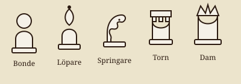

Öppningar och strategier

- Kontrollera mitten av brädet tidigt.
- Utveckla löpare och springare innan du anfaller.
- Flytta inte samma pjäs flera gånger i onödan.
- Rockera för att skydda kungen.
Öva gratis på lichess.org.

Öva gratis på lichess.org.